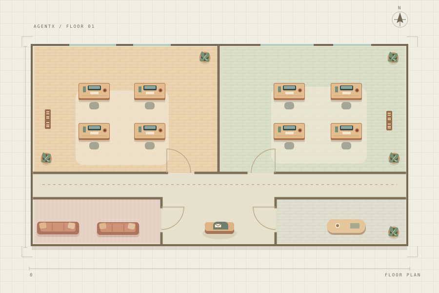

Space
AGENTX / 协作空间
会话
办公室
合成预览
信箱
2
合成预览 · Space
模拟下一次发送
已受理
明确拒绝
结果未知 → 核对后受理
结果未知 → 仍未确认
模拟 Provider 读取
按样本读取
读取失败
没有记录
模拟收到一条新消息
重置样本
全部状态
工作中
等待消息
未运行
状态未知
01
协作楼层
目录

跳到最新
撰写消息
引用
发送
AGENTX / SPACE
找到对的人，
继续手头的事。
从会话列表继续阅读，或到办公室看看成员在哪。
查看办公室